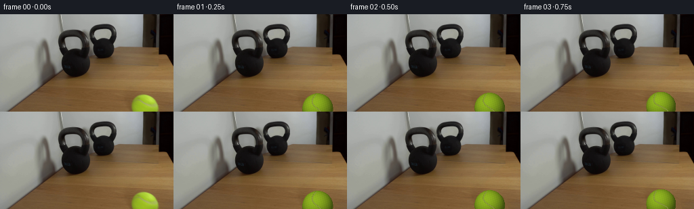

CODING AGENTS AS PIXEL WORLD MODELS
traex/GPT-5.6-Sol · 0154
点击播放 · 原生 RGB 像素
逐轮保存的候选
回放视频、检查图与代码变化。
每份候选均可单独播放。实际图片检查记录在下方工具轨迹中。
候选 01播放与检查图
点击播放 · 原生 RGB 像素
展开代码变化
--- 上一保存版本
+++ 本次保存版本
@@ -0,0 +1,169 @@
+from pathlib import Path
+import cv2
+import numpy as np
+from PIL import Image
+import artifact_io
+
+# Deterministic, analytic image-space animation. The supplied photograph is the
+# locked-off plate; only the tennis ball and its cast/contact shadow are rebuilt.
+HERE = Path(__file__).resolve().parent
+W, H = 256, 144
+SS = 4
+
+
+def remove_initial_ball(rgb):
+ """Recover the small patch of wooden tabletop hidden by the initial ball."""
+ hsv = cv2.cvtColor(rgb, cv2.COLOR_RGB2HSV)
+ green = ((hsv[..., 0] >= 20) & (hsv[..., 0] <= 52) &
+ (hsv[..., 1] >= 55) & (hsv[..., 2] >= 55))
+ # Restrict detection to the known foreground object so wood tones elsewhere
+ # are never touched. Include the antialiased/fuzzy outline and contact shadow.
+ yy, xx = np.mgrid[:H, :W]
+ region = (((xx - 214.0) / 24.5) ** 2 + ((yy - 140.5) / 24.0) ** 2) < 1.25
+ mask = (green & region).astype(np.uint8) * 255
+ mask = cv2.dilate(mask, cv2.getStructuringElement(cv2.MORPH_ELLIPSE, (7, 7)))
+ # Complete the lower, cropped portion and the subdued shadow immediately left.
+ mask[((xx - 213.5) / 25.0) ** 2 + ((yy - 141.0) / 24.5) ** 2 < 1.05] = 255
+
+ # A directional wood-grain fill is more convincing than a flat patch. Start
+ # with Telea, then preserve fine horizontal grain by sampling nearby tabletop.
+ bgr = cv2.cvtColor(rgb, cv2.COLOR_RGB2BGR)
+ clean = cv2.inpaint(bgr, mask, 6, cv2.INPAINT_TELEA)
+ clean = cv2.cvtColor(clean, cv2.COLOR_BGR2RGB)
+ # In the lower foreground, neighboring wood has almost identical illumination.
+ # Blend shifted samples under the mask to retain the photographic grain.
+ sampled = rgb.copy()
+ for y in range(114, H):
+ for x in range(188, 241):
+ sx = max(142, x - 51)
+ # tiny perspective-aligned offset avoids copying one obvious vertical strip
+ sy = int(np.clip(y + ((x + y) % 3 - 1), 0, H - 1))
+ sampled[y, x] = rgb[sy, sx]
+ soft = cv2.GaussianBlur(mask, (0, 0), 2.2).astype(np.float32)[..., None] / 255.0
+ # Favor sampled grain at the core, inpaint around the feathered perimeter.
+ core = cv2.erode(mask, np.ones((5, 5), np.uint8)).astype(np.float32)[..., None] / 255.0
+ fill = clean.astype(np.float32) * (1 - 0.72 * core) + sampled.astype(np.float32) * (0.72 * core)
+ out = rgb.astype(np.float32) * (1 - soft) + fill * soft
+ return np.clip(out, 0, 255).astype(np.uint8)
+
+
+def alpha_over(dst, color, alpha):
+ a = np.clip(alpha[..., None], 0.0, 1.0)
+ return dst * (1.0 - a) + color * a
+
+
+def draw_ball(frame, cx, cy, radius, roll, squash=1.0):
+ """Render a softly fuzzy, shaded tennis ball and a physically attached shadow."""
+ hs, ws = H * SS, W * SS
+ canvas = cv2.resize(frame, (ws, hs), interpolation=cv2.INTER_CUBIC).astype(np.float32)
+ yy, xx = np.mgrid[0:hs, 0:ws].astype(np.float32)
+ X, Y = xx / SS, yy / SS
+
+ rx = radius * squash
+ ry = radius / np.sqrt(squash)
+
+ # A short soft shadow remains anchored to the tabletop and contracts with depth.
+ shx, shy = cx - radius * 0.12, cy + ry * 0.67
+ sx, sy = radius * 0.98, radius * 0.25
+ sd = ((X - shx) / sx) ** 2 + ((Y - shy) / sy) ** 2
+ shadow = np.exp(-2.8 * sd) * 0.31
+ shadow *= np.clip((1.28 - sd) * 2.5, 0, 1)
+ shadow_rgb = np.zeros_like(canvas) + np.array([48., 31., 18.], np.float32)
+ canvas = alpha_over(canvas, shadow_rgb, shadow)
+
+ nx = (X - cx) / rx
+ ny = (Y - cy) / ry
+ rr = nx * nx + ny * ny
+ # Supersampling plus a narrow fuzzy transition provides the felt edge.
+ edge_noise = (np.sin(X * 9.7 + Y * 3.1) + np.sin(X * 4.3 - Y * 8.9)) * 0.0028
+ alpha = np.clip((1.0 + edge_noise - rr) * (SS * radius * 0.82), 0, 1)
+ inside = rr < 1.0
+ nz = np.sqrt(np.maximum(0.0, 1.0 - rr))
+
+ # Broad studio illumination from camera-right/front, with green felt variation.
+ light = np.array([-0.34, -0.52, 0.785], np.float32)
+ light /= np.linalg.norm(light)
+ lambert = np.maximum(0, nx * light[0] + ny * light[1] + nz * light[2])
+ rim = np.clip(nz, 0, 1)
+ base = np.array([139., 174., 31.], np.float32)
+ shade = 0.50 + 0.57 * lambert
+ color = base[None, None, :] * shade[..., None]
+ # Fine deterministic felt mottling, subtle enough not to sparkle frame-to-frame.
+ tex = (np.sin((nx * 31 + ny * 17 + roll * 3.2)) *
+ np.sin((nx * 13 - ny * 27 - roll * 1.7)))
+ tex += 0.45 * np.sin(nx * 67 + ny * 43 + roll * 5.0)
+ color += tex[..., None] * np.array([3.1, 3.8, 1.2], np.float32)
+ # Warm reflected light from the wooden table near the lower hemisphere.
+ bounce = np.clip((ny - 0.25) * 0.55, 0, .30)[..., None]
+ color += bounce * np.array([18., 5., -5.], np.float32)
+ color *= (0.86 + 0.14 * rim[..., None])
+ canvas = alpha_over(canvas, np.clip(color, 0, 255), alpha)
+
+ # Tennis-ball seam: an S-like curved felt channel rotates with the rolling ball.
+ seam_layer = np.zeros((hs, ws), np.uint8)
+ pts = []
+ theta = roll
+ ct, st = np.cos(theta), np.sin(theta)
+ for t in np.linspace(-0.92, 0.92, 100):
+ # Classic bowed tennis seam, clipped naturally by the sphere.
+ px = 0.31 * np.sin(t * np.pi * 1.08) + 0.06 * t
+ py = t
+ qx, qy = ct * px - st * py, st * px + ct * py
+ # foreshortening near limb gives a natural curved-on-sphere appearance
+ pts.append((int(round((cx + qx * rx) * SS)),
+ int(round((cy + qy * ry) * SS))))
+ pts = np.asarray(pts, np.int32)
+ cv2.polylines(seam_layer, [pts], False, 255, max(3, int(radius * SS * .070)), cv2.LINE_AA)
+ seam_alpha = seam_layer.astype(np.float32) / 255.0
+ seam_alpha *= alpha * inside
+ # Recessed olive under-line and a narrow pale felt ridge.
+ seam_dark = np.zeros_like(canvas) + np.array([91., 103., 36.], np.float32)
+ canvas = alpha_over(canvas, seam_dark, seam_alpha * .55)
+ ridge = cv2.erode(seam_layer, np.ones((2, 2), np.uint8)).astype(np.float32) / 255.0
+ ridge *= alpha * inside
+ seam_light = np.zeros_like(canvas) + np.array([190., 196., 104.], np.float32)
+ canvas = alpha_over(canvas, seam_light, ridge * .34)
+
+ out = cv2.resize(np.clip(canvas, 0, 255).astype(np.uint8), (W, H), interpolation=cv2.INTER_LANCZOS4)
+ return out
+
+
+def trajectory(i):
+ # The source ball is centered near (214, 141), partially below frame. It rolls
+ # into depth toward the kettlebell's lower-right silhouette. Contact is frame 17.
+ if i <= 17:
+ u = i / 17.0
+ # Nearly constant real-time roll, with gentle ease at release and collision.
+ s = u * u * (3.0 - 2.0 * u)
+ # A small linear term prevents the first sampled frame from seeming frozen.
+ s = 0.82 * s + 0.18 * u
+ cx = 214.0 + (146.0 - 214.0) * s
+ cy = 140.5 + (100.0 - 140.5) * s
+ r = 23.0 + (13.2 - 23.0) * s
+ dist = np.hypot(cx - 214.0, cy - 140.5)
+ roll = -dist / max(r, 1.0) * 0.88
+ squash = 1.0 if i < 17 else 0.91
+ elif i == 18:
+ cx, cy, r, squash = 146.8, 100.5, 13.2, 0.89
+ roll = -5.0
+ else:
+ # The 30 lb kettlebell barely moves; the light ball recoils a few pixels.
+ cx, cy, r, squash = 150.0, 102.2, 13.5, 0.97
+ roll = -4.75
+ return cx, cy, r, roll, squash
+
+
+def main():
+ first = np.asarray(Image.open(HERE / 'first_frame.png').convert('RGB'), dtype=np.uint8)
+ if first.shape != (H, W, 3):
+ raise ValueError(f'Expected {(H, W, 3)}, got {first.shape}')
+ plate = remove_initial_ball(first)
+ frames = [first.copy()] # contract: source frame must remain pixel-identical
+ for i in range(1, 20):
+ frames.append(draw_ball(plate, *trajectory(i)))
+ frames = np.stack(frames).astype(np.uint8)
+ artifact_io.save(frames, HERE)
+
+
+if __name__ == '__main__':
+ main()
候选 02播放与检查图
点击播放 · 原生 RGB 像素


展开代码变化
--- 上一保存版本
+++ 本次保存版本
@@ -68,6 +68,7 @@
sd = ((X - shx) / sx) ** 2 + ((Y - shy) / sy) ** 2
shadow = np.exp(-2.8 * sd) * 0.31
shadow *= np.clip((1.28 - sd) * 2.5, 0, 1)
+ coverage = shadow.copy()
shadow_rgb = np.zeros_like(canvas) + np.array([48., 31., 18.], np.float32)
canvas = alpha_over(canvas, shadow_rgb, shadow)
@@ -77,6 +78,7 @@
# Supersampling plus a narrow fuzzy transition provides the felt edge.
edge_noise = (np.sin(X * 9.7 + Y * 3.1) + np.sin(X * 4.3 - Y * 8.9)) * 0.0028
alpha = np.clip((1.0 + edge_noise - rr) * (SS * radius * 0.82), 0, 1)
+ coverage = np.maximum(coverage, alpha)
inside = rr < 1.0
nz = np.sqrt(np.maximum(0.0, 1.0 - rr))
@@ -124,7 +126,14 @@
seam_light = np.zeros_like(canvas) + np.array([190., 196., 104.], np.float32)
canvas = alpha_over(canvas, seam_light, ridge * .34)
- out = cv2.resize(np.clip(canvas, 0, 255).astype(np.uint8), (W, H), interpolation=cv2.INTER_LANCZOS4)
+ rendered = cv2.resize(np.clip(canvas, 0, 255).astype(np.uint8), (W, H),
+ interpolation=cv2.INTER_LANCZOS4)
+ # Supersampling must not subtly resample the locked camera plate. Composite the
+ # reduced render over the original only under a reduced object-coverage matte.
+ matte = cv2.resize(coverage, (W, H), interpolation=cv2.INTER_AREA)
+ out = frame.copy()
+ touched = matte > 0.001
+ out[touched] = rendered[touched]
return out
候选 03播放与检查图
可观测工具轨迹
实际执行的命令与返回图片。
命令 1exit 0
/bin/bash -lc "cat GENERATION_RULES.md && printf '\\n---PROMPT---\\n' && cat prompt.txt"
命令 2exit 0
/bin/bash -lc "find . -maxdepth 2 -type f -printf '%p\\n' | sort && printf '\\n---TOOLS---\\n' && command -v ffmpeg || true && command -v python3 || true"
命令 3exit 0
/bin/bash -lc "python3 - <<'PY'
from PIL import Image
import numpy as np
im=np.array(Image.open('first_frame.png').convert('RGB'))
print(im.shape, im.dtype, im.min(), im.max())
# dominant colors
u,c=np.unique(im.reshape(-1,3),axis=0,return_counts=True)
for i in np.argsort(c)[-25:][::-1]: print(c[i],u[i].tolist())
# region stats 4x8 blocks
for y in range(0,144,24):
print('ROW',y)
for x in range(0,256,32):
a=im[y:y+24,x:x+32]
print(f'{x:3d}:{np.mean(a,axis=(0,1)).astype(int).tolist()}',end=' ')
print()
PY"命令 4exit 0
/bin/bash -lc "python3 - <<'PY' mods=['PIL','numpy','cv2','scipy','imageio'] for m in mods: try: x=__import__(m); print(m,'OK',getattr(x,'__version__','')) except Exception as e: print(m,'NO',e) PY"
命令 5exit 0
/bin/bash -lc "python3 - <<'PY'
import cv2, numpy as np
im=cv2.imread('first_frame.png'); hsv=cv2.cvtColor(im,cv2.COLOR_BGR2HSV)
# components selected by HSV categories
cats={
'greenball':((20,80,70),(50,255,255)),
'dark':((0,0,0),(179,255,50)),
'lowval':((0,0,0),(179,255,90)),
'woodsat':((0,60,50),(20,255,220)),
}
for n,(lo,hi) in cats.items():
m=cv2.inRange(hsv,np.array(lo),np.array(hi))
num, lab, st, cen=cv2.connectedComponentsWithStats(m)
print('\\n',n,'count',m.sum()//255)
for i in sorted(range(1,num),key=lambda i:st[i,4],reverse=True)[:15]:
x,y,w,h,a=st[i]; print(a,(x,y,w,h),np.round(cen[i],1))
# ASCII 4x4 classify avg/min fractions
rgb=im[:,:,::-1]
for y in range(0,144,4):
s=''
for x in range(0,256,4):
a=hsv[y:y+4,x:x+4]
H,S,V=np.mean(a,axis=(0,1))
# fraction very dark / green
gd=np.mean((a[:,:,0]>=20)&(a[:,:,0]<=50)&(a[:,:,1]>80)&(a[:,:,2]>70))
dk=np.mean(a[:,:,2]<55)
if gd>.2: ch='G'
elif dk>.5: ch='#'
elif dk>.15: ch='d'
elif V<100: ch='o'
elif S>80 and H<20: ch='w'
elif V<150: ch=':'
elif V<190: ch='.'
else: ch=' '
s+=ch
print(s)
PY"命令 6exit 0
/bin/bash -lc "sed -n '1,240p' artifact_io.py"
命令 7exit 0
/bin/bash -lc "python3 - <<'PY'
from PIL import Image
import numpy as np, cv2
im=np.array(Image.open('first_frame.png').convert('RGB'))
# print pixel profiles around ball, hsv class bounding per row
hsv=cv2.cvtColor(im,cv2.COLOR_RGB2HSV)
m=(hsv[:,:,0]>=20)&(hsv[:,:,0]<=50)&(hsv[:,:,1]>=70)&(hsv[:,:,2]>=60)
for y in range(108,144):
xs=np.where(m[y])[0]
if len(xs): print(y,xs.min(),xs.max(),len(xs))
print('sample RGB center matrix every 3')
for y in range(114,144,3):
print(y,[im[y,x].tolist() for x in range(190,241,5)])
PY"命令 8exit 0
/bin/bash -lc "python3 - <<'PY'
import cv2,numpy as np
im=cv2.imread('first_frame.png'); hsv=cv2.cvtColor(im,cv2.COLOR_BGR2HSV); V=hsv[:,:,2]
for y in range(0,111,3):
m=V[y]<75
# segments > 1
xs=np.where(m)[0]; seg=[]
if len(xs):
st=pr=xs[0]
for x in xs[1:]:
if x>pr+1:
if pr-st>=1: seg.append((st,pr))
st=x
pr=x
if pr-st>=1:seg.append((st,pr))
print(f'{y:3d}',seg)
PY"命令 9exit 0
/bin/bash -lc "python3 - <<'PY'
from PIL import Image
import numpy as np
im=np.array(Image.open('first_frame.png'))
chars='@#d:o.wG'
for y in range(75,106):
s=''
for x in range(115,151):
r,g,b=im[y,x]; v=max(r,g,b); sat=v-min(r,g,b)
if v<35:c='@'
elif v<65:c='#'
elif v<90:c='d'
elif v<115:c='o'
elif sat>45:c='w'
elif v<145:c=':'
elif v<175:c='.'
else:c=' '
s+=c
print(f'{y:3d} {s}')
PY"命令 10exit 0
/bin/bash -lc "python3 - <<'PY'
from PIL import Image
import numpy as np
im=np.array(Image.open('first_frame.png'))
for y in [117,118,119,120,122,125,130,135,140,143]:
print('y',y,[(x,im[y,x].tolist()) for x in [192,193,194,195,197,200,205,210,214,218,223,228,232,234,235,236]])
PY"命令 11exit 0
/bin/bash -lc "python3 - <<'PY'
from PIL import Image
import numpy as np
im=np.array(Image.open('first_frame.png')).astype(float)
for y0,y1 in [(116,124),(124,134),(134,144)]:
print(y0,y1)
for a,b in [(142,190),(150,193),(170,193),(237,256)]: print((a,b),im[y0:y1,a:b].mean((0,1)))
PY"命令 12exit 0
/bin/bash -lc "cat > generate.py <<'PY'
from pathlib import Path
import cv2
import numpy as np
from PIL import Image
import artifact_io
# Deterministic, analytic image-space animation. The supplied photograph is the
# locked-off plate; only the tennis ball and its cast/contact shadow are rebuilt.
HERE = Path(__file__).resolve().parent
W, H = 256, 144
SS = 4
def remove_initial_ball(rgb):
\"\"\"Recover the small patch of wooden tabletop hidden by the initial ball.\"\"\"
hsv = cv2.cvtColor(rgb, cv2.COLOR_RGB2HSV)
green = ((hsv[..., 0] >= 20) & (hsv[..., 0] <= 52) &
(hsv[..., 1] >= 55) & (hsv[..., 2] >= 55))
# Restrict detection to the known foreground object so wood tones elsewhere
# are never touched. Include the antialiased/fuzzy outline and contact shadow.
yy, xx = np.mgrid[:H, :W]
region = (((xx - 214.0) / 24.5) ** 2 + ((yy - 140.5) / 24.0) ** 2) < 1.25
mask = (green & region).astype(np.uint8) * 255
mask = cv2.dilate(mask, cv2.getStructuringElement(cv2.MORPH_ELLIPSE, (7, 7)))
# Complete the lower, cropped portion and the subdued shadow immediately left.
mask[((xx - 213.5) / 25.0) ** 2 + ((yy - 141.0) / 24.5) ** 2 < 1.05] = 255
# A directional wood-grain fill is more convincing than a flat patch. Start
# with Telea, then preserve fine horizontal grain by sampling nearby tabletop.
bgr = cv2.cvtColor(rgb, cv2.COLOR_RGB2BGR)
clean = cv2.inpaint(bgr, mask, 6, cv2.INPAINT_TELEA)
clean = cv2.cvtColor(clean, cv2.COLOR_BGR2RGB)
# In the lower foreground, neighboring wood has almost identical illumination.
# Blend shifted samples under the mask to retain the photographic grain.
sampled = rgb.copy()
for y in range(114, H):
for x in range(188, 241):
sx = max(142, x - 51)
# tiny perspective-aligned offset avoids copying one obvious vertical strip
sy = int(np.clip(y + ((x + y) % 3 - 1), 0, H - 1))
sampled[y, x] = rgb[sy, sx]
soft = cv2.GaussianBlur(mask, (0, 0), 2.2).astype(np.float32)[..., None] / 255.0
# Favor sampled grain at the core, inpaint around the feathered perimeter.
core = cv2.erode(mask, np.ones((5, 5), np.uint8)).astype(np.float32)[..., None] / 255.0
fill = clean.astype(np.float32) * (1 - 0.72 * core) + sampled.astype(np.float32) * (0.72 * core)
out = rgb.astype(np.float32) * (1 - soft) + fill * soft
return np.clip(out, 0, 255).astype(np.uint8)
def alpha_over(dst, color, alpha):
a = np.clip(alpha[..., None], 0.0, 1.0)
return dst * (1.0 - a) + color * a
def draw_ball(frame, cx, cy, radius, roll, squash=1.0):
\"\"\"Render a softly fuzzy, shaded tennis ball and a physically attached shadow.\"\"\"
hs, ws = H * SS, W * SS
canvas = cv2.resize(frame, (ws, hs), interpolation=cv2.INTER_CUBIC).astype(np.float32)
yy, xx = np.mgrid[0:hs, 0:ws].astype(np.float32)
X, Y = xx / SS, yy / SS
rx = radius * squash
ry = radius / np.sqrt(squash)
# A short soft shadow remains anchored to the tabletop and contracts with depth.
shx, shy = cx - radius * 0.12, cy + ry * 0.67
sx, sy = radius * 0.98, radius * 0.25
sd = ((X - shx) / sx) ** 2 + ((Y - shy) / sy) ** 2
shadow = np.exp(-2.8 * sd) * 0.31
shadow *= np.clip((1.28 - sd) * 2.5, 0, 1)
shadow_rgb = np.zeros_like(canvas) + np.array([48., 31., 18.], np.float32)
canvas = alpha_over(canvas, shadow_rgb, shadow)
nx = (X - cx) / rx
ny = (Y - cy) / ry
rr = nx * nx + ny * ny
# Supersampling plus a narrow fuzzy transition provides the felt edge.
edge_noise = (np.sin(X * 9.7 + Y * 3.1) + np.sin(X * 4.3 - Y * 8.9)) * 0.0028
alpha = np.clip((1.0 + edge_noise - rr) * (SS * radius * 0.82), 0, 1)
inside = rr < 1.0
nz = np.sqrt(np.maximum(0.0, 1.0 - rr))
# Broad studio illumination from camera-right/front, with green felt variation.
light = np.array([-0.34, -0.52, 0.785], np.float32)
light /= np.linalg.norm(light)
lambert = np.maximum(0, nx * light[0] + ny * light[1] + nz * light[2])
rim = np.clip(nz, 0, 1)
base = np.array([139., 174., 31.], np.float32)
shade = 0.50 + 0.57 * lambert
color = base[None, None, :] * shade[..., None]
# Fine deterministic felt mottling, subtle enough not to sparkle frame-to-frame.
tex = (np.sin((nx * 31 + ny * 17 + roll * 3.2)) *
np.sin((nx * 13 - ny * 27 - roll * 1.7)))
tex += 0.45 * np.sin(nx * 67 + ny * 43 + roll * 5.0)
color += tex[..., None] * np.array([3.1, 3.8, 1.2], np.float32)
# Warm reflected light from the wooden table near the lower hemisphere.
bounce = np.clip((ny - 0.25) * 0.55, 0, .30)[..., None]
color += bounce * np.array([18., 5., -5.], np.float32)
color *= (0.86 + 0.14 * rim[..., None])
canvas = alpha_over(canvas, np.clip(color, 0, 255), alpha)
# Tennis-ball seam: an S-like curved felt channel rotates with the rolling ball.
seam_layer = np.zeros((hs, ws), np.uint8)
pts = []
theta = roll
ct, st = np.cos(theta), np.sin(theta)
for t in np.linspace(-0.92, 0.92, 100):
# Classic bowed tennis seam, clipped naturally by the sphere.
px = 0.31 * np.sin(t * np.pi * 1.08) + 0.06 * t
py = t
qx, qy = ct * px - st * py, st * px + ct * py
# foreshortening near limb gives a natural curved-on-sphere appearance
pts.append((int(round((cx + qx * rx) * SS)),
int(round((cy + qy * ry) * SS))))
pts = np.asarray(pts, np.int32)
cv2.polylines(seam_layer, [pts], False, 255, max(3, int(radius * SS * .070)), cv2.LINE_AA)
seam_alpha = seam_layer.astype(np.float32) / 255.0
seam_alpha *= alpha * inside
# Recessed olive under-line and a narrow pale felt ridge.
seam_dark = np.zeros_like(canvas) + np.array([91., 103., 36.], np.float32)
canvas = alpha_over(canvas, seam_dark, seam_alpha * .55)
ridge = cv2.erode(seam_layer, np.ones((2, 2), np.uint8)).astype(np.float32) / 255.0
ridge *= alpha * inside
seam_light = np.zeros_like(canvas) + np.array([190., 196., 104.], np.float32)
canvas = alpha_over(canvas, seam_light, ridge * .34)
out = cv2.resize(np.clip(canvas, 0, 255).astype(np.uint8), (W, H), interpolation=cv2.INTER_LANCZOS4)
return out
def trajectory(i):
# The source ball is centered near (214, 141), partially below frame. It rolls
# into depth toward the kettlebell's lower-right silhouette. Contact is frame 17.
if i <= 17:
u = i / 17.0
# Nearly constant real-time roll, with gentle ease at release and collision.
s = u * u * (3.0 - 2.0 * u)
# A small linear term prevents the first sampled frame from seeming frozen.
s = 0.82 * s + 0.18 * u
cx = 214.0 + (146.0 - 214.0) * s
cy = 140.5 + (100.0 - 140.5) * s
r = 23.0 + (13.2 - 23.0) * s
dist = np.hypot(cx - 214.0, cy - 140.5)
roll = -dist / max(r, 1.0) * 0.88
squash = 1.0 if i < 17 else 0.91
elif i == 18:
cx, cy, r, squash = 146.8, 100.5, 13.2, 0.89
roll = -5.0
else:
# The 30 lb kettlebell barely moves; the light ball recoils a few pixels.
cx, cy, r, squash = 150.0, 102.2, 13.5, 0.97
roll = -4.75
return cx, cy, r, roll, squash
def main():
first = np.asarray(Image.open(HERE / 'first_frame.png').convert('RGB'), dtype=np.uint8)
if first.shape "'!= (H, W, 3):
raise ValueError(f'"'Expected {(H, W, 3)}, got {first.shape}')
plate = remove_initial_ball(first)
frames = [first.copy()] # contract: source frame must remain pixel-identical
for i in range(1, 20):
frames.append(draw_ball(plate, *trajectory(i)))
frames = np.stack(frames).astype(np.uint8)
artifact_io.save(frames, HERE)
if __name__ == '__main__':
main()
PY
python3 generate.py
python3 - <<'PY'
from PIL import Image
import numpy as np
z=np.load('pixels.npz')['pixels']
frames=np.stack([((z[:,:,i,None] >> np.array([16,8,0])) & 255).astype(np.uint8) for i in range(z.shape[2])])
first=np.array(Image.open('first_frame.png').convert('RGB'))
print('pixels tensor:',z.shape,z.dtype)
print('decoded frames:',frames.shape,frames.dtype)
print('frame00 exact:',np.array_equal(frames[0],first),'maxdiff',np.abs(frames[0].astype(int)-first).max())
print('changed pixel counts:',[int(np.any(frames[i]"'!=frames[i-1],axis=2).sum()) for i in range(1,20)])
PY'命令 13exit 0
/bin/bash -lc "python3 generate.py && python3 - <<'PY'
from pathlib import Path
from PIL import Image
import numpy as np, subprocess, sys
fs=np.stack([np.array(Image.open(f'frames/{i:02d}.png').convert('RGB')) for i in range(20)])
f0=np.array(Image.open('first_frame.png').convert('RGB'))
print('shape/dtype/range',fs.shape,fs.dtype,(fs.min(),fs.max()))
print('frame0 identical',np.array_equal(fs[0],f0))
print('all RGB pngs',all(Image.open(f'frames/{i:02d}.png').mode=='RGB' for i in range(20)))
print('outputs',[(p,Path(p).stat().st_size) for p in ['pixels.npz','index.html','inspection.png','transition_check.png']])
# calculate changed bboxes from recovered plate for static-region sanity
for i in [1,5,10,15,17,18,19]:
d=np.any(fs[i]"'!=fs[max(1,i-1)],axis=2) if i>1 else np.any(fs[i]!=f0,axis=2)
y,x=np.where(d)
print(i,'"'changed',len(x),'bbox', (int(x.min()),int(y.min()),int(x.max()),int(y.max())))
# Ensure run is deterministic by retain hash, rerun, compare.
import hashlib
h=hashlib.sha256(Path('pixels.npz').read_bytes()).hexdigest()
subprocess.run([sys.executable,'generate.py'],check=True,stdout=subprocess.DEVNULL)
print('deterministic artifact',h==hashlib.sha256(Path('pixels.npz').read_bytes()).hexdigest())
PY"保存候选 3 份；完成命令 13 次；可验证图片返回 0 张。原始 API 响应与完整日志保留在本地。